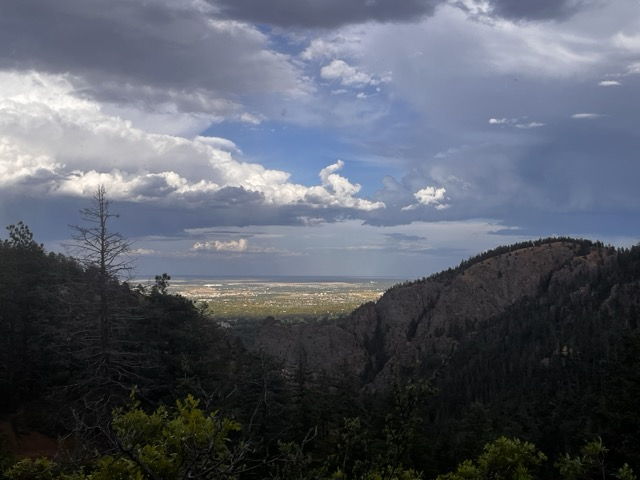
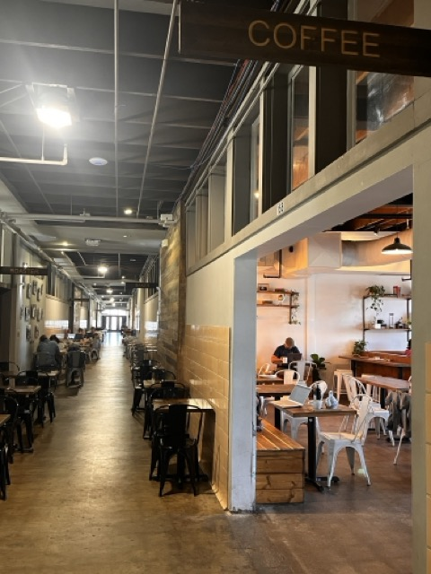
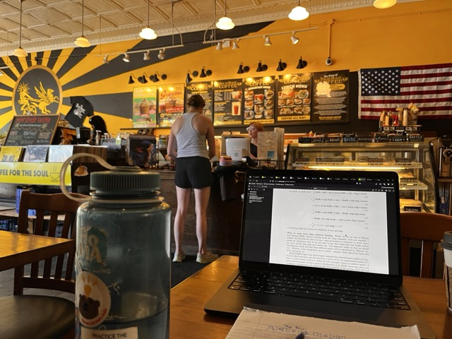
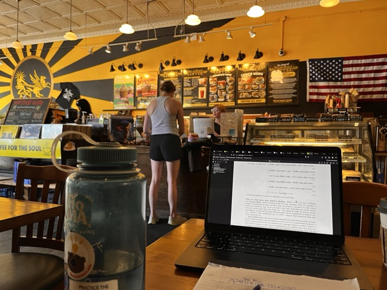

This summer, I did research at University of Colorado Colorado Springs in a REU (Research Experiences for Undergraduates) program. UCCS is located just off of the Rocky Mountains and is located over a mile (6,035’) over sea level! I loved spending time there, and haven’t found much information about the program online. Here’s a list of things to do in Colorado Springs: some information is geared towards the REU students specifically, and some just for anyone in the area.
The disadvantages of COS public transit (Mountain Metro Transit) is they are not very frequent, and end early on weekends (No bus service after 5pm). However the buses here also run really early, like around 6:40am, and are cheap (or free). The two main routes serving campus is the 9 route and the 34 route. The 9 goes downtown, while the 34 goes down Garden of the Gods road. I used the 34 after work on weekdays to get to Springs Climbing Center pretty often.
There is a campus shuttle that runs on weekdays and can pick you up from the Ent Center for the Arts. It runs every fifteen minutes and is super helpful for grocery runs.
A really great surprise was learning about the Bustang shuttles, which can get you from Colorado Springs to Denver or Pueblo for just $12 one way. You need to get a separate app for it, but there is service from downtown and other locations in COS.
I recommend hiking in the early morning, or bringing a flashlight in the evening.
University Park Bluff: If you run on North Academy and head south towards the University Park residential community, head towards the satellite tower at the top (behind the Alpine Village). There is an amazing view of the city, a pullup bar, and a quick scramble down to the dorms.

University Trail System: These trails go through the Austin Bluffs northeast of the school, and you can access them by walking down Clyde Way and up Eagle Rock.The Spine Trail takes you around ridges to the top of a protruding bluff.

Pulpit Rock: This was the first hike I did in the area, located maybe two miles from the campus. You get great views of the Rockies and Nevada road, and the highway that runs through town. It is a landmark of UCCS. I also visited during the nighttime: the rock felt almost florescent underneath.

Barr Trail: These trails are located in the back of Manitou Springs, which is a town 8 or 9 miles from campus at the foot of Pike’s Peak and the other mountains. Barr Trail leads to Barr Camp about 6.5 miles up and then to Pike’s Peak at 13.1. Barr Camp is great, it’s a wooded campground with ample camping spots, water, and a shop. From Barr Camp, you can try some other trails; I walked the Elk Park trail which took me to the north of Pike’s Peak.

The Manitou Incline is a very steep stairway that connects to the Barr Trail at around mile 3. I never did this but it is super popular and definitely something I want to do in the future.
Lower Columbine/Gold Camp Trail: These trails are also around Cheyenne Mountain, and lead you into the valley of Manitou Springs. These are red gravel and fairly steep, I never got to explore them completely but great views of the city and plains from afar (the handful of skyscrapers in downtown look tiny)
Mount Muscoco: This is a difficult short climb up a smaller mountain. The view of the Rockies is impressive, you get a much better idea of how huge they are.
Seven Falls: These falls are actually one big waterfall broken into seven pieces! And a waterfall is just one slice of water distorting itself across time and space… There are trails at the top of the falls that lead you to a nice outlook where Cave of the Winds people zipline from. There’s also a trail to Midnight Falls, which is like ten feet tall so it might be disappointing to some.

Palmer Park: Definitely one of my favorite places to visit, although every time I did I got lost on the way back down. You can take the Templeton Gap trail to get here. The Yucca Flats are on the top, a flat loop so good for training purposes. There are running/hiking trails around it and a great view of the Rockies. Lots of cactuses and shrubs dotting the sides.

Pike’s Peak Greenway: There are two directions: south towards downtown or north towards Monument. The south direction leads to the Olympic Museum/ America the Beautiful Park, while the north direction leads to the gravel Sante Fe trail. The Sante Fe trail has better views, and runs right next to a railroad. Other notable landmarks on the North trail include Great Wolf Lodge, Bass Pro Shops Outdoor World, the white covered skeletons of new developments… There’s a lot more to explore.
Ute Valley: This park has amazing views of the Rockies as well, it is located near their base to the north. Lots of mountain biking trails.

UVC Starbucks: This place was open until 9pm everyday so it gets the top mention. It’s less than a mile from Alpine Village, it is down and up one big hill though.
Poor Richards: Half converted bookstore, half cafe. The converted bookstore is really big, not as much science and nonfiction as I hoped for. I really wish I had the chance to spend more time here: they are open everyday at the same hours. They have live music every week in the patio area, and do improv as well.
Kairos: This was recommended online, and it really is a great place to go read books and think. It is a Victorian/Baroque setting with chandeliers and carpeted floors, and run by a youth ministry. They have good vegetarian options. This is a 5 minute walk off Garden of the Gods road.

Lincoln Center/Building Three: Set inside of a former schoolhouse, this place has plenty of tables and is right next to one of the 9 stops. The atmosphere is very clean and professional. It’s also open consistently on the weekends unlike Kairos. If you want a haircut there is also a barber here.
1979: A coffee shop off of the Pike’s Peak Greenway. It has great reviews on Yelp and it is actually a great place to work or study. Bike down the Greenway and cross a railroad to get there. I didn’t know before going in that it is part of a Woodmen megachurch. Apparently they hold service while it is open, they just take a break for coffee and then resume service. It’s an interesting place to explore.

Solar Roast Coffee: A downtown spot with records/music for sale, and also a lot of news articles about their unique solar-powered coffee roaster. Also a great place to work and contemplate things.
La Baguette: A downtown cafe with marked-down
old croissants.
Big Cat Coffee: The university
coffee shop! They have a variety of snacks as well.
GoG
Starbucks: Located conveniently a couple miles down Garden of
the Gods.
 

Springs Climbing Center: A really spacious sport climbing gym. The climbs start at V1 and go to V11-12, and are about half a grade easier the gyms I’ve been to. They have a competition wall and belay climbing as well.

Spencer’s Produce, Lawn and Garden: This place (located in South COS) may seem like a home improvement store but they have a great selection of local produce, sauces, and jams in the back. They also give out paper money which you can spend on Spencer Buck Days.
Basecamp Books: This is a bookstore located in a strip mall! It’s much larger than I expected from the storefront, they have a good selection of different genres.

Hooked on Books: A classic used bookstore located downtown. I got a poetry anthology from here.
Roadhouse Cinemas: A movie theater where you can order food from the seats. It was an odd experience that felt like a scene from Wall-E, some people might enjoy it. There’s also a more classic arcade attached.
Gunther Toody’s: A 50s / 60s motorcycle-themed diner that plays Tom and Jerry on repeat.
Novis Mortem: A curiosities shop with crawling and flying insects (not for sale). They sell butterfly wings here for “art” projects, as well as a wide range of cool stickers and prints.

Supernova: This is a bar and arcade in one building. The machines cost a quarter & the vibe is very chill. There is a jukebox here too.
Crooked Cue: This is a pool-house downtown with a lot of tables.
Pike’s Peak or Bust Rodeo: Definitely worth going to if you’ve never been to a rodeo! They have lots of tents set up outside selling cowboy hats, military gear, newly forged knives etc.
Skate City: A roller rink open until 11pm most days.
Denver Museum of Nature & Science: So fun and interesting! Unrealistic polar bear nuclear families, walruses hunting with their tusks in the sand, rocks and minerals, mammal fossils from near Colorado Springs, dinosaurs, the human body (they have several dissected ones on display), outer space, butterfly specimens. There’s one really cool exhibit about the astrological instruments made by the Native tribes in the area. It’s fun to see how the focus changes between the older exhibits “we will instruct you on basic facts about our discipline”, to the special new ones: “Mouse vs. Scorpion! Here are stats on their specific abilities and defenses, which are probably already out of date”.

Denver Museum of Art: A lot of it is geared towards encouraging young artists and interactive exhibits. My favorite exhibits here were on the second floor of the contemporary gallery.
Mutiny Information Cafe: Another amazing bookstore + cafe in Denver, on South Broadway. The books here are really well-priced, I bought a backpackful.

Novation: A EDM venue that hosts weekly events in Denver
Places I didn’t visit but were recommended
Ivywild
Paradise Cove
Rocky Mountain National Park
Mount Edgar
Cowboys
Some line dancing thing
Meow Wolf (Denver)